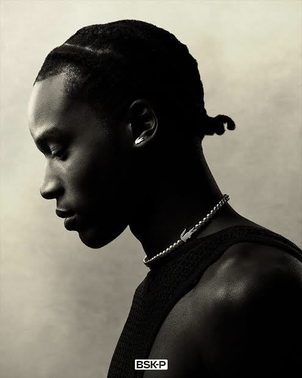
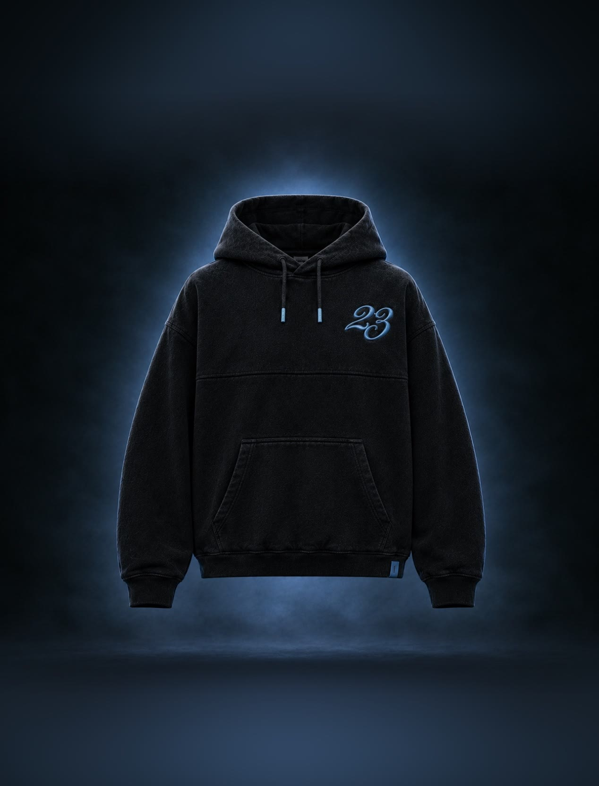
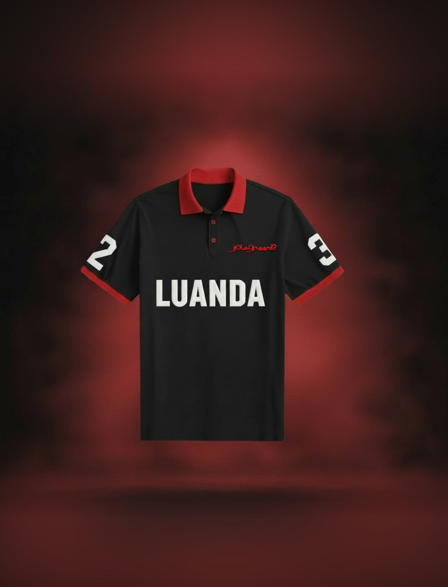

UNE COLLAB.
TROIS ALBUMS.
UN UNIVERS.

Uniqlo × Jolagreen23 est une collaboration pensée comme un prolongement de la musique : chaque album du rappeur devient une capsule de vêtements, avec son univers, sa couleur et ses pièces. Le confort et l’accessibilité de la LifeWear d’Uniqlo rencontrent l’imaginaire de Jolagreen23.

JOLAGREEN23
Rappeur franco-angolais, Jolagreen23 navigue entre deux villes : Paris et Luanda, la ville qui ne dort jamais. Son univers mélange images de guerre et de fin du monde, culture jeu vidéo et références à l’animation japonaise. Le vert est sa signature : dans son nom, dans ses visuels, et maintenant dans chaque pièce de la collab.
UNIQLO LIFEWEAR
LifeWear, c’est la philosophie d’Uniqlo : des vêtements simples, de qualité, pensés pour durer et pour rendre le quotidien plus confortable. Des basiques bien coupés, accessibles à tous. La collab garde cette base et y ajoute l’univers de Jolagreen23 : mêmes matières et même exigence, mais avec des prints, des couleurs et des détails qui racontent ses albums.
TROIS ALBUMS, TROIS CAPSULES

R&D
Treillis, camouflage et vert néon : la capsule de la ville après la fin du monde.
5 PIÈCESVOIR LA COLLECTION →
99XP
Niveaux, manettes et bleu nuit : la capsule de ceux qui finissent la partie.
5 PIÈCESVOIR LA COLLECTION →
GOTY
Numéros, maille piquée et rouge Luanda : la capsule pensée comme une édition collector.
5 PIÈCESVOIR LA COLLECTION →